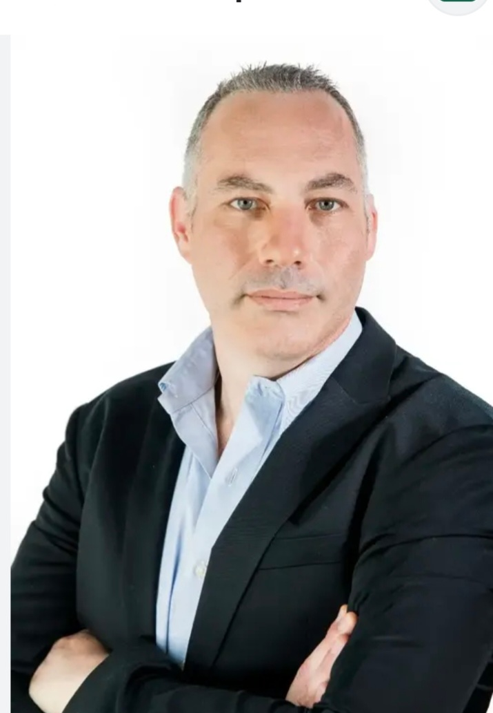
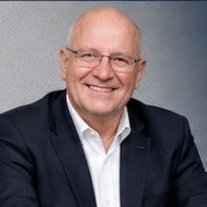
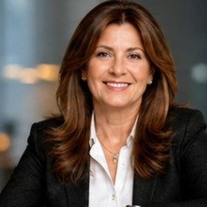

About Brain
A startup developing organizational intelligence, and the movement engine that executes and implements in the field
Who we are, and what stands behind Brain
- A company for developing intelligence, Brain 1, Brain 2, …
- For Organizations! Our #1 customer, always 😊
- For Municipalities, Retirees, Customer #2
- For Humanoid Robots, Human-support robots
- Offices, Vibe Center, Kfar Saba · Lean (but smart) company
- External development team, Commit
We continue researching the change algorithm and AI-driven change implementation in organizations.
Clear and simple, in four steps
"Brain doesn't just think, recommend, or analyze.
It makes things happen."
An AI Co-Manager that moves people and processes, for organizations, individuals, and future robotic systems
8,000 organizations, 40 industries, we know the challenges, metrics, and constraints
First, us

Co-founder of MyCockpit, a technology and digital management startup. Managed a company of ~35 employees across development, product, marketing and operations. Raised millions of dollars from investors including ErgoQuest and Dell's investment fund, led by Jason Barzilay.
Throughout her career she has combined the worlds of education, management, and social impact. She worked at Amdocs and at a leading executive search firm, where she gained experience working with senior management, business development, and leading organizational processes. She also leads educational and social initiatives, promoting learning, leadership, positive parenting, and community development. The combination of business experience, educational expertise, and systemic thinking enables her to accompany people and organizations through processes of growth, change, and development.

Specializes in Full Stack development, AI products and advanced software solutions, translating complex ideas into efficient, precise and actionable technological solutions. Works in Hebrew, English and Russian, combining broad engineering experience, business understanding and advanced AI-based methodologies.

Believes technology must serve people, and that the smartest solution is the one connected to the real challenges of the organization.

Responsible for connecting with clients, understanding their business needs, guiding sales processes and maintaining ongoing, professional and personal relationships throughout the journey. Combines managerial precision, listening skills, high interpersonal communication and practical thinking to create a pleasant, clear and forward-moving experience for clients.

Brings systemic thinking, reliability and practical experience, with an approach aimed at centralizing all technological needs for the client in one place, professionally, reliably and accessibly.

Trains employees and store managers, accompanies sales, service and operations processes. Brings to BRAIN deep field knowledge, team management experience, consumer and sales understanding, and the ability to identify what truly drives employees, customers and sales processes in practice.
Senior professionals who are our friends, advisors, and companions on the journey

Strongly identified with Wix from its earliest days, leading business development and M&A through the company's massive growth phase. His core expertise is Business Development + M&A, not a classic product person, but a man of connections, deals, partnerships, opportunity identification and strategic growth.
Known as a "connector", bridging people, opening doors and matchmaking between industry players. Named by Geektime among Israel's top BizDev figures in 2014. Appears consistently at senior industry events alongside Israel's leading tech figures.
Active in entrepreneurship communities, university hubs, regional innovation centers and youth programs, with a strong orientation toward entrepreneurial education. Believes entrepreneurship is not a profession but a way of life.

Led Keter through an aggressive growth phase across Europe and the US. Drove international acquisitions including Allibert (France) and EOS (Denmark). Under his leadership, Keter became one of the world's largest plastic and storage products companies, with dozens of factories and operations in over 40 countries.
Identified with building global manufacturing, distribution and logistics capabilities. Transitioned from CEO to Group President as part of a leadership restructuring, and later facilitated the billion-dollar sale of Keter to BC Partners private equity.
Key figures: $400M+ in sales, operations in 40+ countries, dozens of factories across Israel, Europe and the US.

Leads PRG Executive Search, a boutique firm specializing in identifying CEOs, CFOs, directors and chairpersons. Works with banks and financial institutions, public companies, holding groups, industry and manufacturing, insurance and capital markets, retail, real estate, government-owned companies and nonprofits.
Strongly identified with Board Advisory and Governance, building strong leadership teams and boards, not just "placement." Bank Hapoalim selected her to lead the search process for its new CEO.
Also engaged in leadership assessment, Succession Planning and building executive tables. Considered deeply connected to Israel's senior leadership tier, CEOs, chairpersons, directors and controlling shareholders.

Deputy CEO at Irooka retail chain. Deputy SVP Customer Service and Head of Front-Line Service at Partner Communications (formerly Orange). SVP at Castro fashion chain. SVP Service at El Al Airlines.
A rare combination of Retail + Service + Operations, three worlds that rarely meet in one person.
Former senior commander in the Israeli Air Force, helicopter pilot. Expert in performance analysis and operational research.

Managed working interfaces with Rafael, Elbit, IAI and other defense industries. Expert in complex national programs with vast experience managing thousands of interfaces and suppliers.
A deeply systemic, engineering-oriented figure, combining military discipline with technological thinking. Brings managerial stability, high reliability and the ability to execute massive programs.
"Be radical in technology, conservative in organization"

Deputy CEO and VP Technology & Innovation at Ayalon Highways, where he led smart mobility, adaptive traffic signals, control centers, transportation cybersecurity, drones and future infrastructure. Later moved to the private sector as Head of Technology Division at YSB Group.
Thinks at both the strategic and execution levels, a relatively rare combination. Speaks extensively about the future of transportation, sustainability, smart cities and practical innovation.
MSc in Exact Sciences, alongside Law and Business Administration degrees.

Extensive experience across technology, industry, services and tourism companies, accompanying firms through growth, transformation, M&A and IPOs. He led AxisMobile to its IPO on London's AIM exchange and served as founding CFO at Advanced Technology Acquisition Corp.
Among a series of senior roles: CEO of RoadEye, Managing Director at Gintec, CFO at PassCall and ICTS, CFO & Managing Director at International Tourist Attractions, and Senior Auditor at KPMG Somekh Chaikin. A mentor in Tel Aviv University's Executive MBA program (Coller School of Management) for over a decade.
"To help CEOs and companies realize their potential and create real, sustainable value."

An expert in commercial law, M&A, investments and fundraising, hi-tech, antitrust, sports and international transactions. She advises companies, entrepreneurs and investors on complex deals in Israel and abroad, from negotiation through closing, including transactions across dozens of countries.
She holds prominent public roles: Chair of the Sports Law Committee at the Israel Bar Association, Chief Legal Counsel to the Israel Basketball Association, and Chair of committees on antitrust and international trade. Her clients include public and private companies, startups, investment funds, aviation, insurance and finance firms, sports and real estate.
"Combining business thinking, deep legal understanding and a broad network, to create winning deals and sustainable growth."
All the knowledge, articles, and insights in one place
Articles, research, and insights on driving employee performance, change implementation, and AI-based management. Brain also builds each organization a Knowledge Box, its organizational knowledge book, generated automatically and constantly improving.
To the Knowledge page →